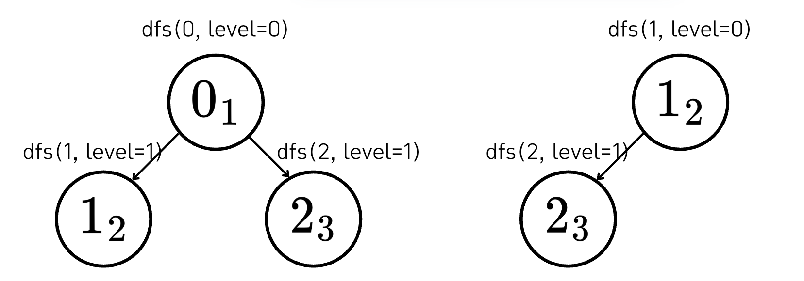
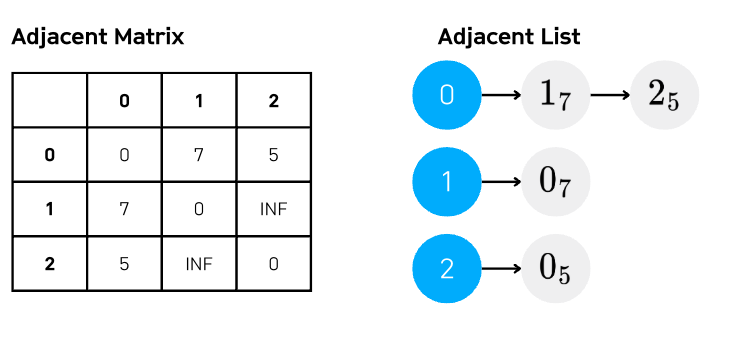
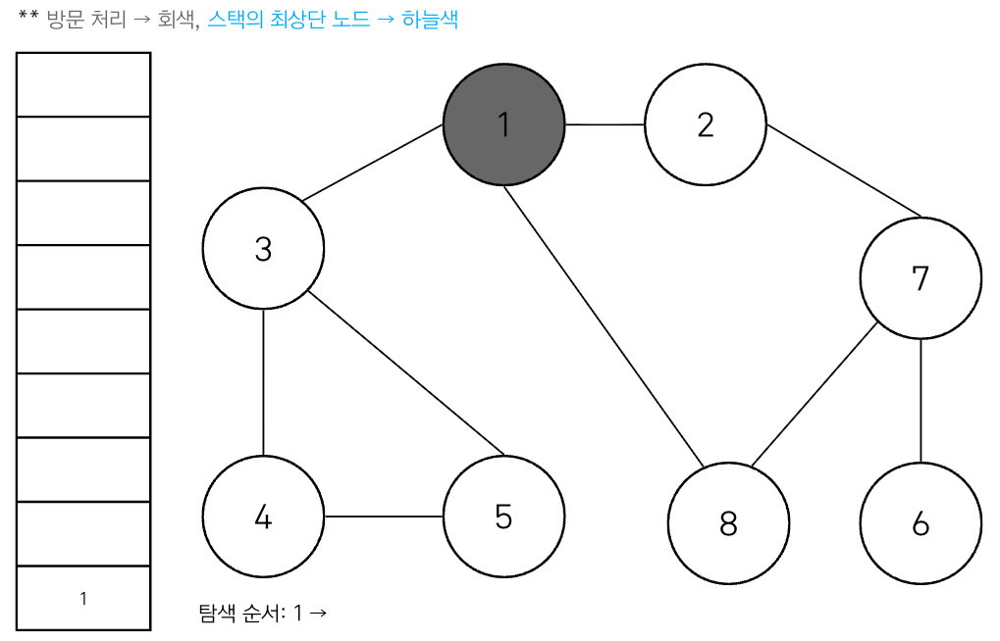

Lecture 2-2. DFS/BFS 실습#
예시 문제 링크
1번 문제 풀이 아이디어#
아래처럼 길이 나있는 경우가 있을 수 있으므로, 직선으로 움직이는 경우 상하좌우, 회전도 robot의 pivot block 기준으로 가로로 위치한 경우에는 위아래 혹은 세로로 위치한 경우에는 상하로 회전할 수 있도록 해야한다.


When we run BFS, each robot state is represented as the positions of its two blocks and the current time. But we need consistency: which block should be stored first? To avoid duplicates, we always order the two coordinates so that the smaller one comes first. This normalization guarantees that the same robot configuration is stored uniquely in the queue.
{kind=link}
If the robot is lying horizontally, we can rotate it around either the left block or the right block. Each rotation can go both upward and downward, converting the robot into a vertical orientation. So, in total, we get four possible rotations in this situation.
During rotation, we must check not only the pivot block but also the adjacent cells that the robot sweeps through.
If the pivot is the right block, the non-pivot’s upper and lower cells must be empty.
If the pivot is the left block, again the non-pivot’s upper and lower cells must also be empty. These checks prevent collisions during rotation.
{kind=link}
After rotation, the final state is defined by the pivot block plus the new block either above or below it. For example, rotating upward results in the pivot plus the cell above it. Rotating downward results in the pivot plus the cell below it. This ensures that we represent the robot’s new vertical position consistently.
{kind=link}
# [Left pivot rotation ↑]
# Pivot → (y1, x1)
# After move → {(y1, x1), (y1-1, x1)}
# Must check → (y2-1, x2)
# [Right pivot rotation ↑]
# Pivot → (y2, x2)
# After move → {(y2-1, x2), (y2, x2)}
# Must check → (y1-1, x1)
After rotation, the final state is defined by the pivot block plus the new block either above or below it. For example, rotating upward results in the pivot plus the cell above it. Rotating downward results in the pivot plus the cell below it. This ensures that we represent the robot’s new vertical position consistently.

When the robot is vertical, the situation is symmetric. The pivot can be either the top block or the bottom block. Each pivot allows a rotation to the left or to the right, changing the robot’s orientation from vertical to horizontal.
{kind=link}
As in the horizontal case, rotation requires collision checks. If the pivot is the bottom block and we rotate left, the non-pivot’s left cell must be empty. If we rotate right, the non-pivot’s right cell must be empty. Similarly, when the pivot is the top block, we check the left and right cells of the non-pivot during rotation. These rules guarantee that rotations happen without intersecting obstacles.
{kind=link}
After a vertical rotation, the final state is also described by the pivot plus one adjacent cell. Rotating left results in the pivot plus its left neighbor. Rotating right results in the pivot plus its right neighbor. This completes the transition from vertical to horizontal while preserving a consistent representation.
By exploring the state space, we obtain a complexity of \(O(N^2)\). The grid size is \(N \times N\), and the robot can place one of its ends on any cell. This gives \(O(N^2)\) possibilities. Since the robot can exist in two orientations—horizontal and vertical—each cell has two possible states. Therefore, the total number of states is approximately \(O(2 \times N^2)\), which simplifies to \(O(N^2)\).
In addition, the number of possible actions from each state is constant: 8 moves in total (4 parallel moves in the four directions, plus 4 rotations — 2 pivots × 2 rotation directions). Thus, each state expands in \(O(1)\).
Consequently, the overall time complexity is \(O(N^2)\), and the space complexity is also \(O(N^2)\).
"""
제한사항
5 <= N <= 100
BFS -> O(NxN), 각 칸에 대해 2가지 방향, 각 상태에서 상수개 액션
# 장애물이 있으면 왼쪽/위쪽으로 돌아가야하므로 4방향 모두 탐색해야함.
# 회전도 양방향 회전 전부 고려해야함.
"""
from collections import deque
def solution(board):
n = len(board)
def in_range(y, x):
return 0 <= y < n and 0 <= x < n
def neighbors(p1, p2):
(y1, x1), (y2, x2) = p1, p2
cand = []
# 1) 4방향 평이동
dirs = [(-1,0),(1,0),(0,-1),(0,1)]
for dy, dx in dirs:
ny1, nx1 = y1 + dy, x1 + dx
ny2, nx2 = y2 + dy, x2 + dx
if in_range(ny1, nx1) and in_range(ny2, nx2) \
and board[ny1][nx1] == 0 and board[ny2][nx2] == 0:
cand.append(((ny1, nx1), (ny2, nx2)))
# 2) 회전 (가로 ↔ 세로)
if y1 == y2: # 가로일 때 → 세로로 회전
for d in [-1, 1]: # 위/아래
if in_range(y1 + d, x1) and in_range(y2 + d, x2) \
and board[y1 + d][x1] == 0 and board[y2 + d][x2] == 0:
# 왼쪽 블록 기준 회전
cand.append(((y1, x1), (y1 + d, x1)))
# 오른쪽 블록 기준 회전
cand.append(((y2, x2), (y2 + d, x2)))
elif x1 == x2: # 세로일 때 → 가로로 회전
for d in [-1, 1]: # 좌/우
if in_range(y1, x1 + d) and in_range(y2, x2 + d) \
and board[y1][x1 + d] == 0 and board[y2][x2 + d] == 0:
# 위쪽 블록 기준 회전
cand.append(((y1, x1), (y1, x1 + d)))
# 아래쪽 블록 기준 회전
cand.append(((y2, x2), (y2, x2 + d)))
# 상태 정규화 (작은 좌표가 앞으로)
norm = []
for a, b in cand:
if a <= b:
norm.append((a, b))
else:
norm.append((b, a))
return norm
# 3) BFS 시작
start = ((0, 0), (0, 1)) # 시작 상태
q = deque([(start, 0)])
visited = {start}
goal = (n - 1, n - 1)
while q:
(p1, p2), t = q.popleft()
if p1 == goal or p2 == goal:
return t
for nxt in neighbors(p1, p2):
if nxt not in visited:
visited.add(nxt)
q.append((nxt, t + 1))
return -1 # 도달 불가
if __name__ == '__main__':
board = [[0, 0, 0, 1, 1],
[0, 0, 0, 1, 0],
[0, 1, 0, 1, 1],
[1, 1, 0, 0, 1],
[0, 0, 0, 0, 0]] # Expected 7
print(solution(board))
board = [[0, 0],
[0, 0]] # Expected 1
print(solution(board))
board = [[0, 0, 0],
[0, 0, 0],
[0, 0, 0]] # Expected 3
print(solution(board))
2번 문제 풀이 아이디어#
# 5x5중에서 3x3격자 선택 및 회전 CW: 90도, 180도, 270도
# 향상 회전 : 중심좌표를 기준으로 90도 회전
'''
### 탐사 진행: 회전 목표
1)유물 1차 회득 가치 최대화
2) 1)의 방법이 여러개이면, 회전한 각도 중 가장 작은 각도 선택
3) 2)의 방법도 여러가지이면 (회전 중심좌표가 다를 수 있음), 회전 중심 좌표의 열이 가장 작은 구간 선택
4) 열이 같다면 행이 가장 작은 구간 선택
### 유물 1차 획득
- 유물의 가치: 5x5행렬에서 모인 조각의 개수 -> "3개 이상"부터 획득 가능
- 유물이 사라짐.
- 새로들어오는 유물은 유적의 벽면에 써 있는 숫자대로 진행 (row up, column up순으로 채워짐)
- 사용된 숫자다음부터 다음에 사용할 수 있음
#### 유물 연쇄 획득
- 새로운 유물 조각이 생겨난 이후에도 유물이 있으면 조각을 획득하고 없앤후 다시 채움.
- 다만 더 이상 조각이 3개 이상 연결되지 않아 유무이 될 수 없으면 멈춤
#### 탐사 반복
- 탐사 진행 -> 유물 1차 획득 -> 유믈 연쇄 획득 과정까지 1턴이며 총 K번 턴을 돌림.
- 1번의 turn에서 K번 이전에 어떠한 방법을 사용해서라도 유물을 획득할 수 없다면, 모든 탐사는 그 즉시 종료됨.
이 경우 얻을 수 있는 유물이 존재하지 않으므로, 종료되는 턴에 아무 값도 출력하지 않음.
'''